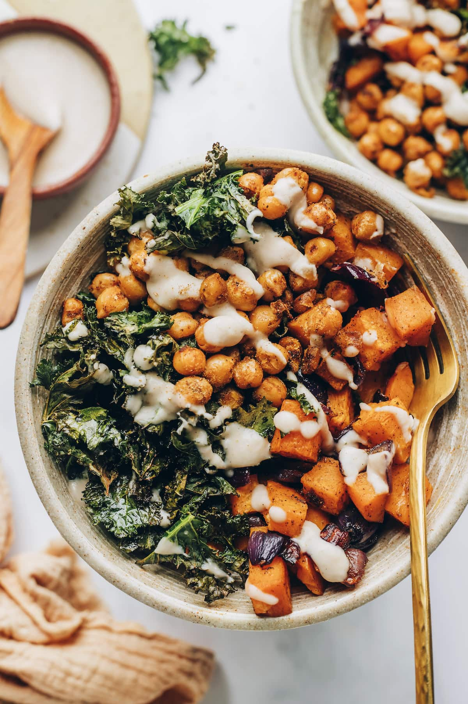

Vegan Power Bowl

Description:
This is a healthy lunch or dinner packed with lots of protein and fiber. And its supppper easy.
This dish has chickepea, sweet potato, kale, and red onion
This dish has chickpeas as its main source of protein, but if you aren't vegan, feel free to sub with any protein of your liking!
To top off the bowl, we will use a yummy tahini dressing that is easy to make. What makes this dish
easy as well is that you can easily meal prep everything and it still tastes as fresh. Its all in the kale and how we will
be using it in this dish
Ingredients:
- 2 big sweet potatoes
- Olive Oil
- 1 red onion
- 2 tbsp. tahini
- 1 tbsp. lemon juice
- 1/2 tbsp. maple syrup
- water (to thin dressing)
- 230g chickpeas, drained
- 1 tsp. cumin powder
- 1/2 tsp. garlic powder
- 1/2 tsp. salt
- 1/2 tsp. chili
- 3 cup kale
Steps:
- Heat up oven to 400 degress F
- Cut the sweet potatoes into cubes or slices, whichever is prefered.
Put them in a bowl and mix in some olive oil. Toss the oil around
along with the olive oil. Spread the potato pieces on a large baking pan lined with
parchement paper
- Cute the red onion into pieces as well. Place them in the same bowl you
used for your sweet potatoes. Swirl the red onion in the bowl to get some
leftover olive oil use on the sweet potatoes. Spread the red onion on same baking pan
with sweet potatoes.
- Put pan with red onion and sweet potato in oven. Bake for 10-15 minutes.
- While potato and red onion bake, we will prepare the chickpeas. In a sauce pan,
add your chickepeas. Top the chickpeas with cumin powder, garlic powder, salt, and chili.
Fold the spices into the chickpeas with a spatula to evenly coat all of them. Roast
ckickpeas in that same pan on medium heat. Heat them up until soft, firm, or hard, depending
on your preference. Once chickpeas are fully cooked to your liking, remove and put into
another container. Set aside.
- Now add fresh kale to that same sauce pan and add a splash of water. Heat
saucepan on medium heat. The water should start evaporating and the kale should
start softening and becoming smaller. Turn off heat once all kale has reached that
desired consistency.
- Now we will make the dressing. In a small bowl, mix tahini, lemon juice, and maple syrup.
As yo umix it, you'll notice the consistency thicken. Add a splash of water and mix. Continue
adding increments of water until the mixture turns into a saucy consistency.
- Put the cooked kale in a bowl now, top it off with the cooked chickpeas, sweet potato,
and red onion. Drizzel some of that tahini sauce and enjoy!